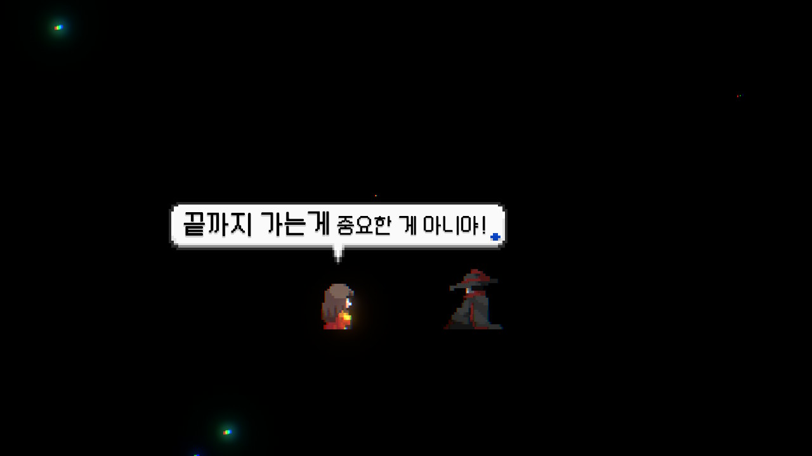

세계 최대 pc 게임 플랫폼 스팀에서 리뷰어 95% 이상 긍정 평가를 받으며 '압도적으로 긍정적' 그룹으로 분류되었다.
'산나비' 제작진은 사이버펑크에 조선시대의 건축 양식과 복식, 한글과 한자로 된 간판을 결합해 독특한 한국풍 SF 세계관을 만들어냈다.
고도로 발달된 정보기술을 바탕으로한 디스토피아적 미래를 그리는 사이버펑크란 장르에 조선이란 전통적인 요소를 녹여낸 점에서 엄청난 긍정적 평가를 받기도 하였다.
끝까지 가는 것이 중요한게 아니라는 메세지를 던지며 기술로 인간성이 대채된 시대에 인간성이 갖는 의미에 대해 고민하게 만드는 스토리 또한 이 작품의 백미이다.
인공지능 기술 발전의 '끝'에는 인간의 노동과 창의력이 고성능 AI에 대체되고, 소수의 빅테크(거대 정보기술기업)가 다수의 삶을 지배할 거라는 비관적인 관측도 심심찮게 나온다.
그런 우리에게 '산나비'는 여러 차례 "끝까지 가는 게 중요한 게 아니야"라며 의미심장한 메시지를 던진다.
그러나 대부분의 스팀 평가가 한국인에 의해 이루어지며 해외에서의 흥행은 아직 이루어지지 않고 있는데, 이는 한국 인디 게임의 홍보적 한계의 영향이 크다는 평가가 나온다.
또한 해외 유명 시나이로 라이터들의 극찬이 이어지는 것을 보아 게임성이나 스토리의 문제가 아닌 번역의 문제가 대두되고 있다.
이에 원더포션은 네오위즈를 배급사로 하여 홍보에 힘을 주고 해외선 게임을 즐기던 해외 유저들의 도움을 받아 번역을 수정, 이후 호평이 이어지고 있다.